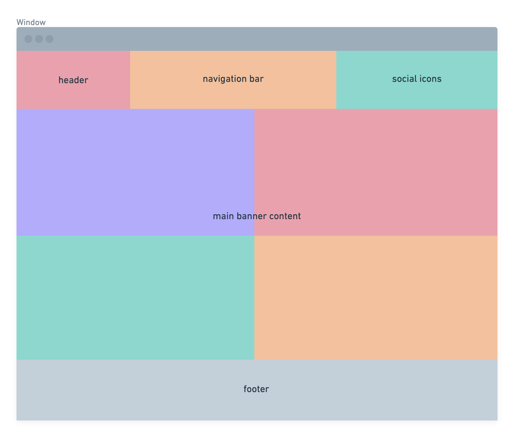
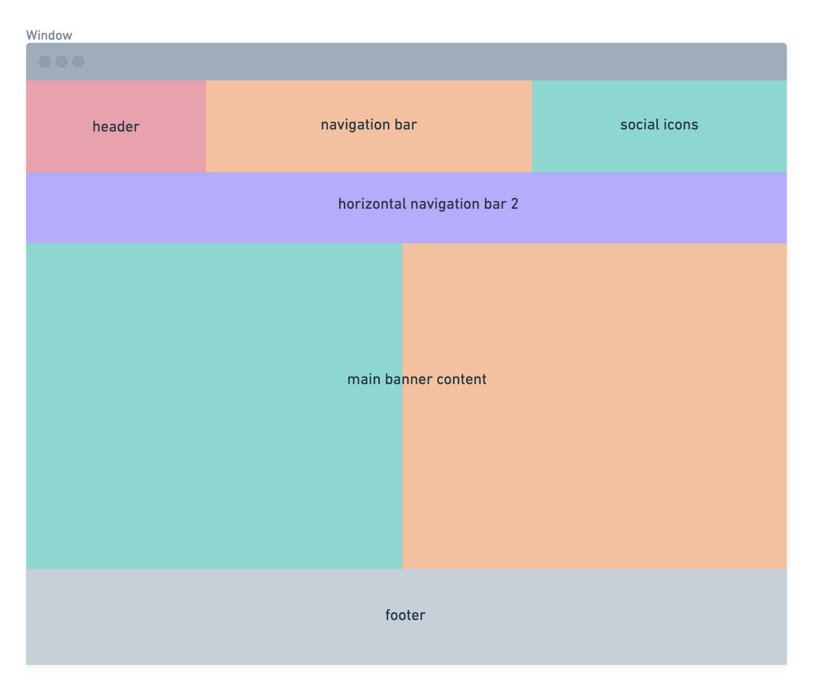
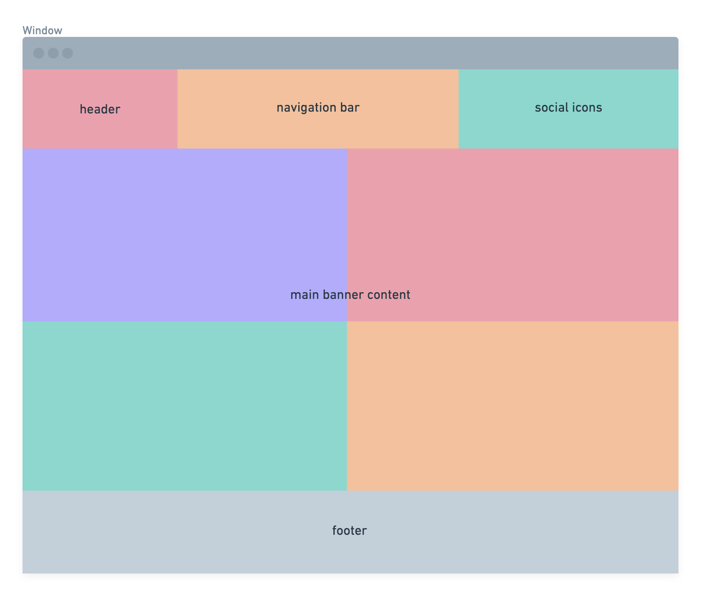
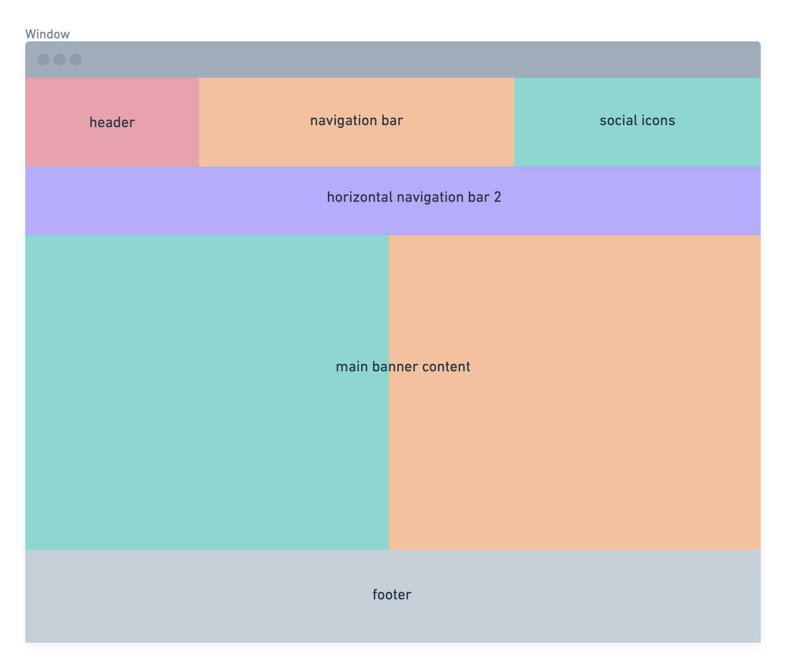
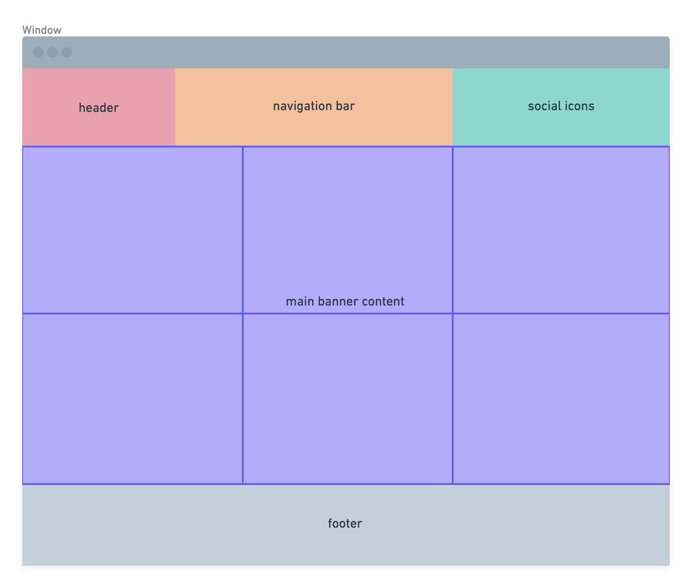

Nicole Ching Yun Wen
Introduction
The storyline of my site involves the world of modern technology. It was
build with the purpose to serve clients a one stop resolution to learn
about all the current news and updates in the tech world. The structure I
chose to implement is similar to that of many popular tech news website.
The major structure used for my site would be the hierarchical method,
this method is highly efficient in storing many data and cascading them
into sub categories making it user friendly when accessing the data. It
can be described as a top down approach where the focus is placed on the
top of the page in my case it is where the most current and top read news
are displayed. This helps to inform the hierarchical structure of my site.
In my opinion this is a suitable structure for a news site as it guides
the user in their experience with the site as they traverse from the major
content into it's sub categories of specialized news. The site will serve
as a mean for distributing technological news and users are able to see
information on the latest major tech corporation, current top rating
gadgets as well as breaking news in the world of tech and science.
My site consists of 6 different web pages.
- Homepage: consolidation of all the tech news topics
- Tech: narrowed content on tech specific news
-
Reviews: narrowed content on tech gadget news review i.e. phones and
laptops
-
(drop down navigation through reviews page)Phones: news review on phones
-
(drop down navigation through reviews page)Laptops: news review on
laptops
-
Science: narrowed content on news in the world of science and tech
relating to healthcare and such
State 3 things that have inspired you when creating your website
-
One of the main inspiration of my site was a popular tech website called
The Verge. As a user of their
website, I find that their content were well organized throughout the
site making it conveniently accesible for users like myself. Although
there are many on going news in the tech world,
The Verge was able to divide
them into categories for users to look for and traverse within their
targeted topics. Hence, that was the inspiration I took to create my
site which is also aiming to achieve the same type of quality with user
experience.
-
I was also inspired by the a gadget review website called
Mighty Gadgets. This website
specializes in a form of tech news by carrying out their own reviews on
the latest gadgets for users around the world to explore before
investing in said gadget. I find such news highly relevant especially
within our tech savvy world today, hence I decided to incorporate a tech
review webpage within my site. This helps my webpage serve a wider
purpose besides distributing current news events.
-
Also from Mighty Gadgets, I
enjoyed the simple yet elegant display of information on their site in
little postcards format. I find that, that method of displaying data is
pleasing to users allowing them to see tidy, individual packages of
articles. Hence, I also made use of a similar method of displaying news
articles in my Science webpage and it creates a cohesive yet tidy way of
portraying all the different article content.
State 3 ways in which you have considered usability in your site
-
I have ensured that my site is easy for users to traverse by organizing
tech news in a categorized top-down approach. I made use of the specific
relevant headers in my navigation bar ensuring that users are able to
easily locate the specific tech news type they are looking for such as,
general tech news, tech gadget reviews as well as general science tech
news. I believe that in a news website, there are usually plenty of data
that needs to be displayed hence by categorizing the articles, I can
improve the quality of usability for my users.
-
Another way I have ensured the usability of my site is by ensuring that
majority of my articles comes with an image, this allows users to
quickly narrow down to the specific news content they were looking for.
Most of the images also comes with an alt text within my html code such
that users who makes use of a screen reader will also be able to
identify the article and its said content.
-
Last but not least I have ensured usability by making sure that my site
is accesible on most devices such as phones, laptops or tablets.
State 3 ways in which your site is accessible
-
I have made my site accessible on desktop by displaying more news
content in a structed content given the bigger screen space provided by
computers. This way users are able to see more news articles within
their desktop screens.
-
I have made my site accessible on tablets as well by allowing the
articles to be stacked under each other in a scrolling format given the
smaller screen size compared to that of a regular desktop. This way
users are able to access all the article content even without a laptop
or computer.
-
Lastly, I have also ensured that my site is accessible on mobile devices
which is extremely important as most people currently rely on their
mobile phones to access data due to its convenience. My site is
accessible on a mobile phone as the navigation bar becomes a drop down
menu allowing users to still traverse between news categories on the
site, this allows users to access all news articles even while on the
go.
State 3 things you had to learn/find out by yourself and describe how you
did that
-
I have had guidance from w3schools in allowing me to make use of
template codes and editing them to make the code unique to my site. For
example, the use of a horizontal navigation bar in my reviews page.
-
I also figured out how to implement media queries into my website
through W3Schools such that it is accessible to different platforms.
-
I also learnt from youtube on how to effienctly insert hyperlinks on
designated content within my site, increasing my site's efficiency as
well as usability.
What aspects of your work do you think worked well and why?
-
I think I managed to achieve a simple yet sufficiently educating news
webpage such that the articles are neatly categorized and organized for
users to access.
-
I also think I achieved in conveying the same user experience for users
accessing my webapge on different devices such as desktops, tablets as
well as mobile devices. This ensures that my site is widely accessible
for all users at any point of time.
-
Another aspect I think worked well was by placing texts over my
article's images, this helps to garner the user's attention by drawing
them to the specific content of their interest. This also makes my page
seem less heavy for users as many of the article's words are masked by
related image in the background. Hence, users would not feel that they
are overwhelmed by the sheer amount of text content found on a typical
news site.
What aspects of your work could be improved, and how might you do things
differntly another time
-
I feel that the link pathways within my site could be improved on by
including more sections within my page so that users all able to access
all the content they desire just within one of the webpage.
-
I think that my site could also be improved on by further categorizing
each individual categories for example within my tech webpage, I could
further categorize the tech news content and it would make my site far
more efficient for a user's experience.
-
I think that the media query used for my site could be improved on and
one method would be to include more media queuries and gaining a better
understanding of related tags.
What resources were used when creating your work?
I have used many tech websites that I had found on google and
understanding the best way a news article should be displayed on the site.
This allowed me to draft out specific ways I would like to display the
news content on my own website.
I have also used many references in w3schools to create specific styling
appearances that I would like to use in my own website.
Appendixes
 



- Phones/Laptops page Wireframe

Sitemaps
References and Citations
-
[1] w3schools.com, 'CSS Navigation Bar', 2021. [Online]. Available:
ttps://www.w3schools.com/https://www.w3schools.com/css/css_navbar.asp
[Accessed: 18th- March- 2021]
- [2]https://github.com/
- [3]https://www.youtube.com/